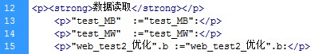
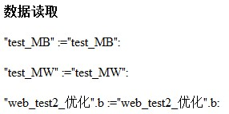

AWP 命令 - 读取变量
用户定义的 Web 页面可从 CPU 读取 PLC 变量和数据块变量，前提是这些变量已激活“从 HMI/OPC UA/Web API 可访问“。
语法：
要读取的变量，可以是 PLC 变量名称、数据块变量、I/O 或位存储器。
- 对于别名或绝对地址访问的 PLC 变量，请勿使用引号将变量名称括起来。
- 对于 PLC 变量，使用双引号将变量名称括起来。
- 对于数据块变量，只用双引号将块名称括起来，变量名称位于引号外。请注意，应使用数据块名称，而不是数据块编号。
- 使用数组元素语法引用数组元素。
示例如下：
- "test_MB" :="test_MB":
- "test_MW" :="test_MW":
- "web_test2_优化".b :="web_test2_优化".b:
上述语句实现功能：
- 读取名称为 “test_MB ”的变量的数值；
- 读取名称为 “test_MW” 的变量的数值；
- 读取名称为 “web_test2_优化” 的 DB 块中名称为 “b” 的变量的数值。数据块中变量的访问整体为 "web_test2_优化".b。
在 HTML 编辑器中编辑如图 1 所示。

图 1.HTML 编辑器中编辑读取数据
编辑完成网页中显示界面如图 2 所示 。

图 2.网页显示页面